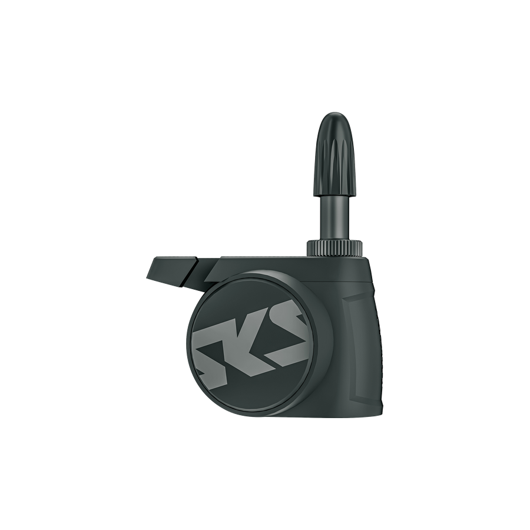
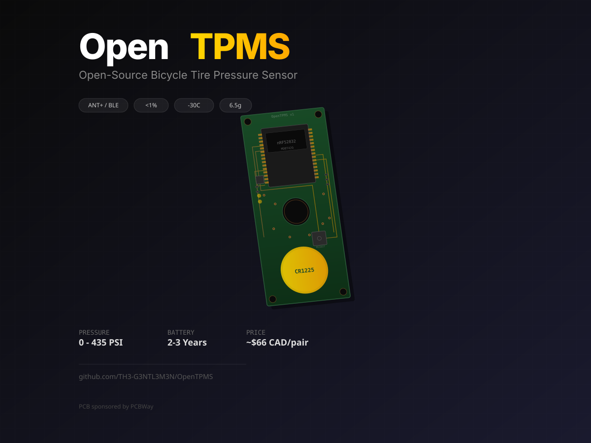

Quarq / SRAM
Quarq TyreWiz 2.0
Supported nowThe current TyreWiz generation is supported by TubeWitch for live pressure, stale-data markers, alerts, and Garmin activity recording.
Compatible Tire Sensors
This page lists tire pressure sensors that TubeWitch supports now or is planned to support soon.
Some hardware may require special firmware before TubeWitch support is possible.
These are the current Quarq / SRAM sensor families supported by TubeWitch.
Quarq / SRAM
The current TyreWiz generation is supported by TubeWitch for live pressure, stale-data markers, alerts, and Garmin activity recording.

Quarq / SRAM
The original TyreWiz valve-mounted sensor family remains supported in TubeWitch for live pressure, alerts, and activity recording.

Quarq / SRAM
This XPLR-specific TyreWiz variant is also supported by TubeWitch for live pressure, alerts, and the same numeric-ID setup flow used by the rest of the TyreWiz family.

Quarq / SRAM
TyreWiz for Moto sensors are also supported by TubeWitch and follow the same core setup flow used by the other TyreWiz families.
TubeWitch also supports Zipp wheel systems that use the integrated Zipp AXS Wheel Sensor.

Zipp
TubeWitch supports the 303 SW wheel system that uses the integrated Zipp AXS Wheel Sensor for live pressure, alerts, and activity recording.
This is the integrated Zipp wheel-sensor path, not a separate valve-mounted TyreWiz sensor.

Zipp
TubeWitch also supports the 353 NSW wheel system when it is using the integrated Zipp AXS Wheel Sensor path.
Like 303 SW, this support follows the integrated Zipp wheel-sensor workflow rather than a separate aftermarket valve sensor.
AIRSPY can work with TubeWitch, but only with the custom firmware by bitmeal.
 AIRSPY MUST be running the custom firmware by bitmeal.
AIRSPY MUST be running the custom firmware by bitmeal.
Stock AIRSPY sensors will not work with TubeWitch. Install the custom firmware by bitmeal first.


SKS
TubeWitch support for AIRSPY depends on the bitmeal custom firmware. Without that firmware, these sensors will not work with TubeWitch.
An open-source bicycle tire pressure monitoring sensor project that is still in development.

OpenTPMS
OpenTPMS is an open-source bicycle tire pressure monitoring sensor project with dual ANT+ and BLE support, a replaceable CR1225 battery, and temperature-compensated flat detection.
This is not a finished retail product yet. It is currently a development project with PCB design completed and the remaining hardware, firmware, enclosure, and testing work still in progress.
AIRMAX is the next smart-sensor family targeted for TubeWitch compatibility.

Schwalbe
TubeWitch support for AIRMAX is planned for a future update. AIRMAX uses paired front and rear sensors with live pressure monitoring through the Schwalbe app.